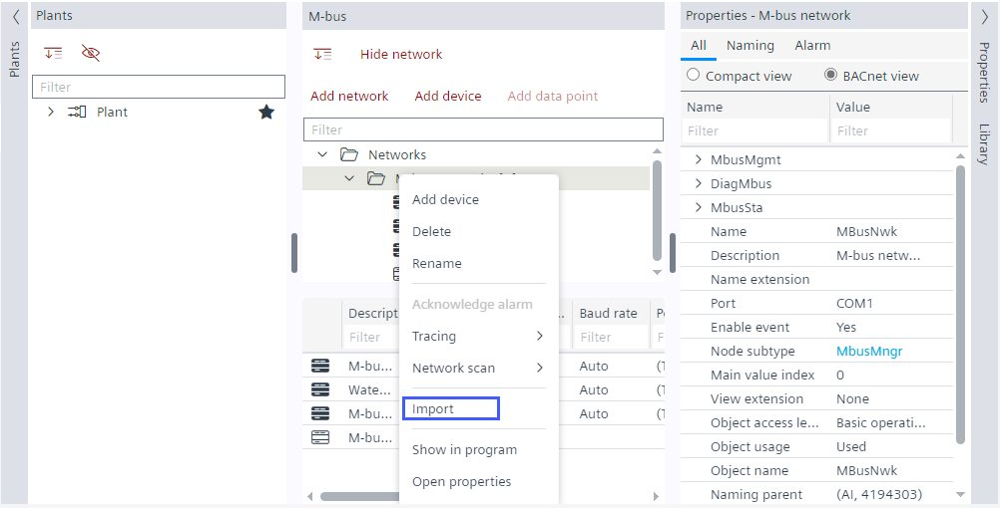

在 M-bus 中导入 Ioopt 文件
Ioopt (I/O 开放点模板) 是用于描述特定 M-bus 设备的配置的数据交换文件。该文件来自 Desigo TX Open，可以导入到 ABT 站点。在这里，设备的数据点被映射到新的集成模型。结果是 ABT 站点中的可配置 M-bus 设备。在极少数情况下，并非所有数据点都可以映射到 ABT 站点中。当某些数据点未映射时，导入操作不会停止。检查日志中是否存在问题并手动调整相应的数据点。
Log viewer and status bar (Log and Jobs)

Import an ioopt file
- You have an ioopt file available.
- Go to Building > Building structure.
- Open the M-bus task.
- In the M-bus area, right-click a M-bus network and select Import.
- Select the ioopt file to import and click Open.
- Click OK.
- The M-bus device and data points specified in the ioopt file are created.
- The bulk reader objects are automatically created for optimizing the network load.